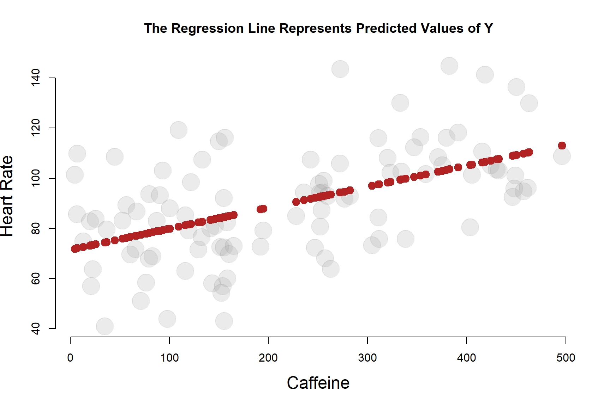
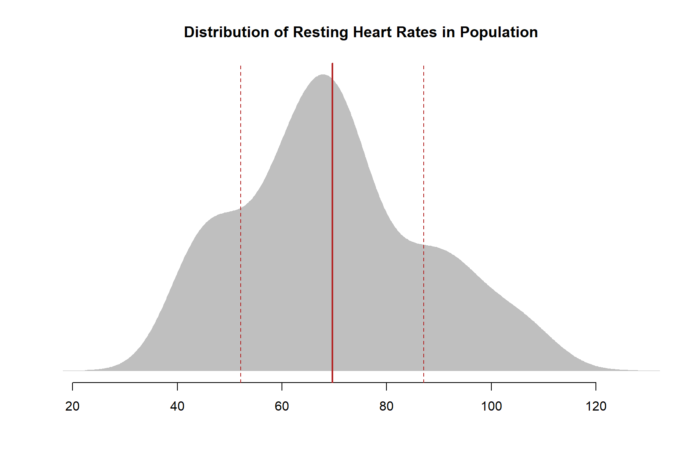
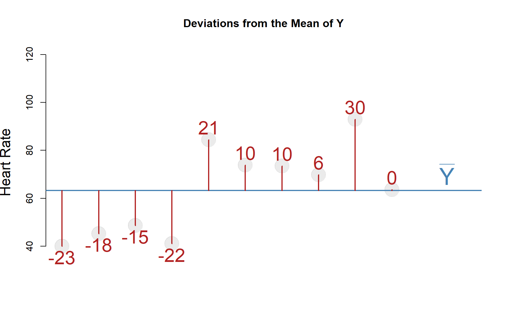

Building a Regression Model
1 Effect of Caffeine on Heart Rate
We are interested in understanding the effect that caffeine has on heart rate. We have designed a study with 100 participants and randomly assigned dosages of caffeine between 0 and 500 mg. We are now trying to determine whether caffeine raises heart rate significantly.
The relationship looks as follows:

1.1 DIY Regression
It looks as though heart rate does increase with the level of caffeine administered. But by how much?
One simplistic way we can analyze the data is by splitting it into several ranges of treatment and calculating the average heart rate for each group:

1.2 The Conditional Mean
Either way, what we are doing here is basically a mathematically imprecise do-it-yourself regression model. Although this is a fairly blunt way to analyze the data, it is actually not too far off from our more mathematically elegant regression line:

This does demonstrate an important point, however. The regression model is a conditional mean: it gives you the average heart rate of a subject conditional on how much caffeine they consumed.
In other words, if you tell me the caffeine intake of the subject, I can give you a good guess of their heart rate.

| ave.caffeine | ave.heart | predicted.heart | |
| 1 | 25 | 80.703 | 73.565 |
| 2 | 75 | 75.926 | 77.756 |
| 3 | 125 | 83.979 | 81.947 |
| 4 | 175 | 75.655 | 86.138 |
| 5 | 225 | 89.738 | 90.329 |
| 6 | 275 | 93.221 | 94.520 |
| 7 | 325 | 98.045 | 98.711 |
| 8 | 375 | 115.826 | 102.902 |
| 9 | 425 | 103.480 | 107.093 |
| 10 | 475 | 113.210 | 111.284 |
The regression line represents the average value of Y conditional on each level of X.
In other words, a regression is just a fancy average.
Another way to think about a regression line is a set of predictions for where we expect Y to be based upon an observed value of X. I am guessing the value of Y based upon information I have on X.
If we have no information on an individual, then our best guess of their level of Y will be the population mean of Y. It is a very crude way to make a prediction, but it is far better than selecting a number at random.
If we only have information about an individual regarding X, then the predicted value of Y conditional on X is our best guess of what the outcome measure might be for that individual.
The strength of our regression model is to some extend a measure of how much our prediction of the true value of Y for an individual improves over simply using the population mean.
When we cover hypothesis testing, we will see that the null hypothesis in regression models is actually just that we can’t improve our predictions about Y by using information on X. Using the population mean of Y to predict the outcome is just as good as using the regression model.
We use the notation \(\hat{y}\) to represent predicted values of Y.
Consequently, we will sometimes use \(\hat{y}\) as shorthand for the regression line.

2 Formula for the Regression
Our regression line can be written as:
\(Y = b_0 + b_1 X\)
The regression model needs to include the residual e.
\(Y = b_0 + b_1 X + e\)
The slope of a regression line can be calculated as a ratio of the covariance of X and Y to the variance of X.
\(b_1 = cov(x,y) / var(x)\)
If you give it some thought, this is a pretty intuitive formula. When X varies by one unit, how much do we expect Y to covary?
Finding the intercept of the regression is a little tricky because after solving for \(b_1\) we have three unknown variables (X, Y, and \(b_0\) ) and only one equation. We need to draw upon the fact that the OLS regression line always passes through the mean of X and the mean of Y, giving us two known values.
\(\bar{y} = b_0 + b_1 \bar{x}\)
\(b_1\) = cov(caffeine,heart.rate) / var(caffeine) = 0.08
\(\bar{y}\) = 90
\(\bar{x}\) = 219
90 = \(b_0\) + 0.08 \(\cdot\) 219 \(b_0\) = 71.47
The regression model gives us a very clear estimate of the “average effect” of one mg of caffeine on heart rate.
| Dependent variable: | |
| heart.rate | |
| caffeine | 0.084*** |
| (0.014) | |
| Constant | 71.470*** |
| (3.503) | |
| Observations | 100 |
| R2 | 0.282 |
| Residual Std. Error | 18.755 (df = 98) |
| Note: | p<0.1; p<0.05; p<0.01 |
3 The Variance of Y
Let’s consider the study population before they received the treatment in order to examine the distribution of heart rates through the population - the variance of heart rate.
The solid red line represents the population mean, and the dotted red lines fall one standard deviation from the mean in either direction.
What does a standard deviation actually mean, though?

If we return to the scatterplot view of the data, we can present the same information using datapoints instead of a density plot. The solid red line represents the population mean, and the dotted red lines fall one standard deviation from the mean in either direction.

3.1 The Standard Deviation
In very simple (and not mathematically correct) terms, the standard deviation is the “average” distance from each data point to the mean.

We use the term “average” loosely because the standard deviation actually measures squared deviations from the mean to calculate variance, then take the square root of the sum to get the measures back to the original units.
The standard deviation would be a true average if we had used the absolute value of distances from the mean, but the intuition is the same.
The STANDARD deviation measures the TYPICAL or AVERAGE deviation.
A DEVIATION is the distance between a data point and the mean.
Let’s drill down to the first ten observations to examine this a little closer:
\(deviation_i = y_i - \bar{y}\)

Distance from the mean of Y for all ten cases:

| ID | Heart_Rate | Mean_Y | Deviations | Devs_Squared |
|---|---|---|---|---|
| 1 | 40.04 | 63.28 | -23 | 529 |
| 2 | 45.25 | 63.28 | -18 | 324 |
| 3 | 48.66 | 63.28 | -15 | 225 |
| 4 | 41.03 | 63.28 | -22 | 484 |
| 5 | 84.39 | 63.28 | 21 | 441 |
| 6 | 73.78 | 63.28 | 10 | 100 |
| 7 | 73.47 | 63.28 | 10 | 100 |
| 8 | 69.78 | 63.28 | 6 | 36 |
| 9 | 92.87 | 63.28 | 30 | 900 |
| 10 | 63.57 | 63.28 | 0 | 0 |
| SUM | - | - | 0 | 3139 |
\(var(y) = \frac{ \sum{ (y_i - \bar{y})^2 } } { (n-1) }\)
Why will the sum of the deviations always add to zero?
Since we have to square the deviations to ensure they are all positive values, we now have very odd units: heart rate squared.
The standard deviation takes the square root of the variance to get us back to original units:
\(stdev(y) = \sqrt{ var(y) }\)
Again, when you hear the term “standard” you should think of “average” or “typical”. It’s not exactly an average because you are taking squared roots of squared deviations (that’s a mouthful), but compared to the mean of the absolute values of the deviations (another mouthful) the metrics are not that far off:
Standard Deviation: 17.5
Average Absolute Values of Deviations: 14.5
4 R-Squared: Explaining Variance
Now that we are comfortable with the idea of measuring deviations, and variance being the sum of the squared deviations, we are ready to tackle the idea of “explaining” variance.
It is important to first note that one nuance worth paying attention to is the subtle difference between the deviations from the mean that comprise the TOTAL VARIANCE calculation, and the residual terms that comprise the REGESSION or EXPLAINED VARIANCE calculation.

The variance of the regression will always be smaller than the total variance because the regression line is chosen so it is closer to the data points.
4.1 Sums of Squares
What is actually happening here is the decomposition of the TOTAL variance into an EXPLAINED and a RESIDUAL component.
Note that A - B + B - C is the same as A - C.
Now take a look at the equations to calculate SUMS OF SQUARES:
TOTAL SS = \(\sum{ (y_i - \bar{y})^2 }\)
RESIDUAL SS = \(\sum{ (y_i - \hat{y})^2 }\)
EXPLAINED SS = \(\sum{ ( \hat{y} - \bar{y})^2 }\)
Note the pattern here:
\(y_i - \hat{y} + \hat{y} - \bar{y} = y_i - \bar{y}\)
\((y_i - \hat{y}) + (\hat{y} - \bar{y}) = y_i - \bar{y}\)
\((RESIDUAL \ SS) + (EXPLAINED \ SS) = TOTAL \ SS\)
Also note that TOTAL SS divided by (n-1) is the variance of Y, so the statement above is the same as saying the TOTAL VARIANCE of Y can be decomposed into an EXPLAINED portion of the variance and an UNEXPLAINED portion of the variance.
Thus \(R^2 = Regression \ SS / Total SS\), or \(R^2\) is measuring the explained portion of the variance of the dependent variable in the model.
Visually it would look something like this:

PARTITIONING THE VARIANCE of our outcome Y means splitting it into EXPLAINED and UNEXPLAINED portions.
The total variance is calculated from DEVIATIONS of data points to the MEAN OF Y.
We partition it by inserting the regression line between the data point and the mean.
The UNEXPLAINED portion is calculated from the RESIDUALS, the distance between the regression line (the predicted values of Y) and observed values.
\(R^2\) is the proportion of TOTAL VARIANCE OF Y accounted for by the regression.
Note that we have a variance of both X and Y in our model. When we are explaining variance or partitioning variance, it is always with respect to the outcome. That is the variance we are trying to explain.
Total SS: 47977
Explained SS: 13507
Residual SS: 34470
We will find these values in an ANOVA table:
| Df | Sum Sq | Mean Sq | F value | Pr(>F) | |
|---|---|---|---|---|---|
| caffeine | 1 | 13507 | 13507 | 38.4 | 0.00000001361 |
| Residuals | 98 | 34470 | 351.7 | NA | NA |
The caffeine Sum Sq here is the Explained portion, and the Residual Sum Sq is the unexplained portion.
The TOTAL SS can be tabulated by adding the Residual SS and Explained SS.
4.2 Residual Standard Error
It’s also worth noting that the Residual Standard Error in the regression model is just the standard deviation of the residuals.
\(Residual \ Std \ Error = \sqrt{ \frac{Residual SS}{ (n-1)} }\)
| Dependent variable: | |
| heart.rate | |
| caffeine | 0.084*** |
| (0.014) | |
| Constant | 71.470*** |
| (3.503) | |
| Observations | 100 |
| R2 | 0.282 |
| Residual Std. Error | 18.755 (df = 98) |
| Note: | p<0.1; p<0.05; p<0.01 |

The Residual Standard Error measures the “average” residual in the model, or the typical amount we can expect to be wrong if we are predicting a level of Y using our regression model.